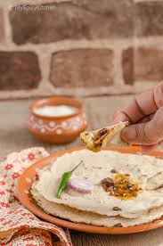

Pongal is a traditional South Indian dish made with rice, split yellow mung dal, ghee, cumin, ginger, pepper and curry leaves.
Indian traditional food.

The rice can be a combination of parboiled rice and a regular variety such as long grain rice, sona masoori etc.,.
Indian traditional food.

Ragi (finger millet) can cause allergic reactions in some individuals, though it's rare.
Indian traditional food.

A traditional Indian bread made from jowar (sorghum) flour.
Indian traditional food.